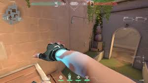
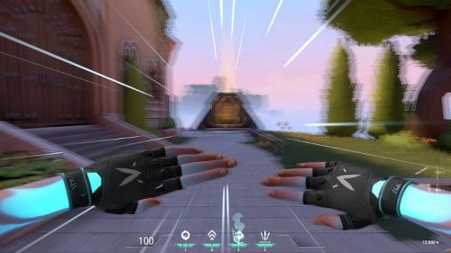
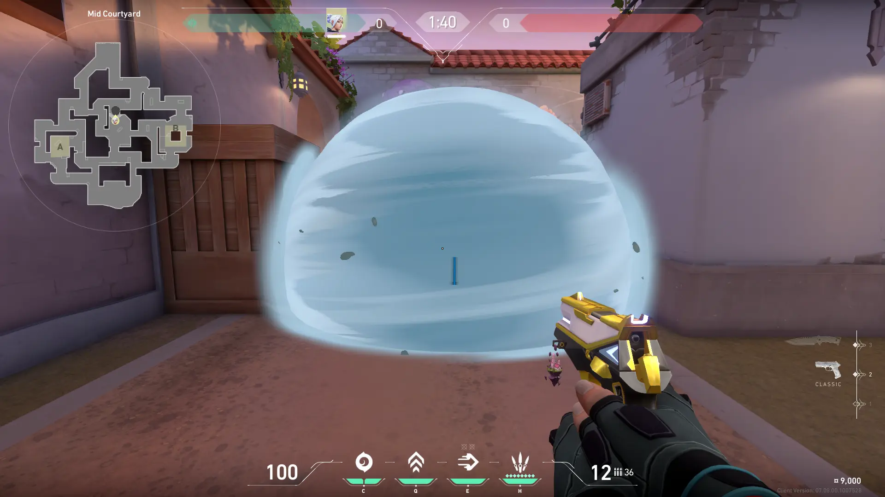

JETT
Função: Duelista
Biografia: Representando sua Coreia natal, Jett tem um estilo de luta ágil e evasivo que permite assumir riscos como ninguém. Corre pelo campo de batalha com velocidade estonteante, cortando inimigos antes que eles percebam quem ou o que os atingiu.
Habilidades Ágeis
Corrente Ascendente
Q - Impulsiona Jett instantaneamente para o alto.
Brisa de Impulso
E - Jett avança rapidamente na direção atual de movimento.
Erupção das Brumas
C - Lança um conjunto de fumaças que obscurecem a visão.
Tormenta de Aço

X - Equipa um conjunto de facas altamente precisas que se regeneram após abate.
Combos de Mobilidade
Combo Básico:
- Use Corrente Ascendente (Q) para ganhar altura
- No ar, ative Brisa de Impulso (E) para avançar
- Use Erupção das Brumas (C) para cobrir sua aterrissagem
Combo Avançado:
- Inicie com Brisa de Impulso (E) para frente
- Imediatamente use Corrente Ascendente (Q)
- No pico do salto, ative Tormenta de Aço (X)
- Use o drift para controlar a queda
Dicas de Operador
- Use a altura para pegar ângulos inesperados
- Brisa de Impulso pode reposicionar você após um tiro de sniper
- Fumaças criam cobertura instantânea para escapes
- Tormenta de Aço é letal em combates aéreos
- Você pode "drift" no ar segurando o botão de pular